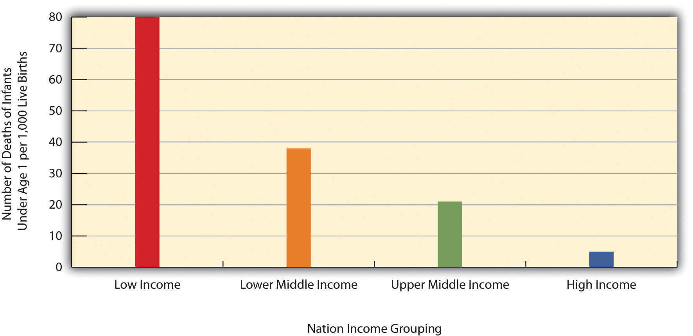
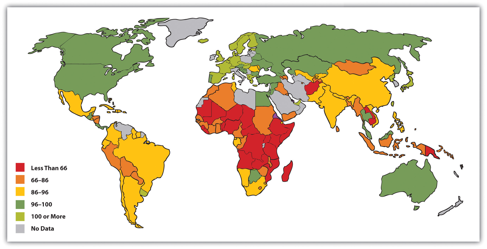
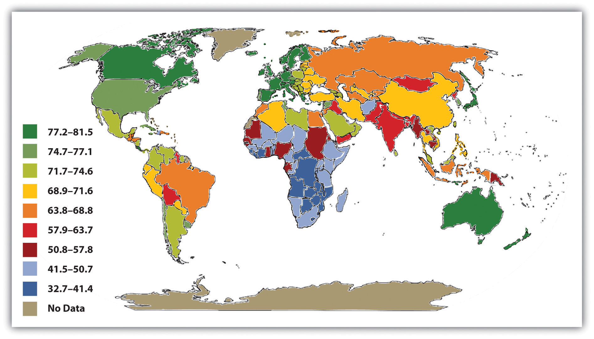
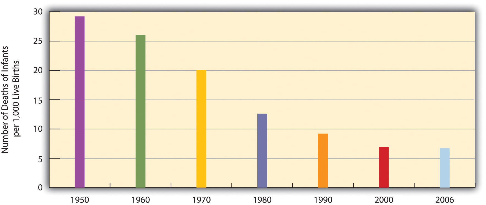
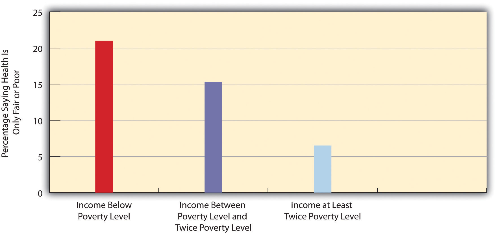
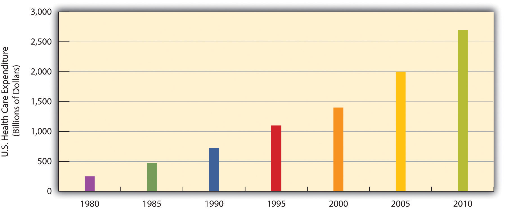
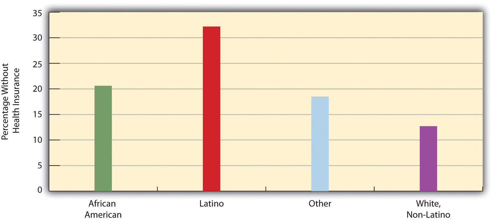
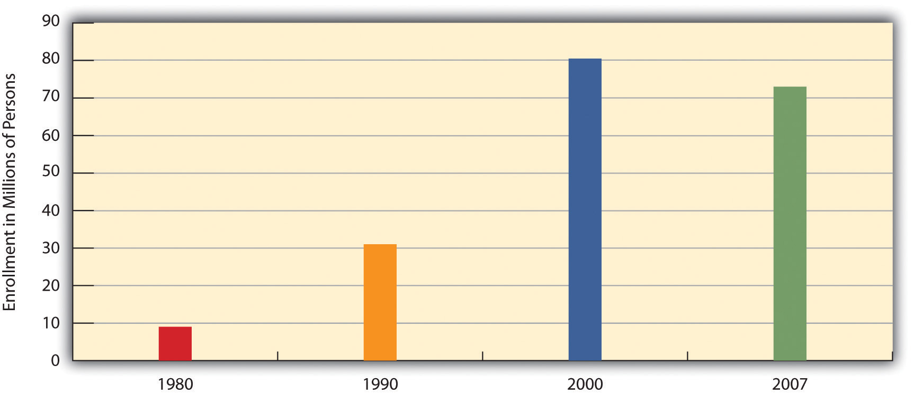
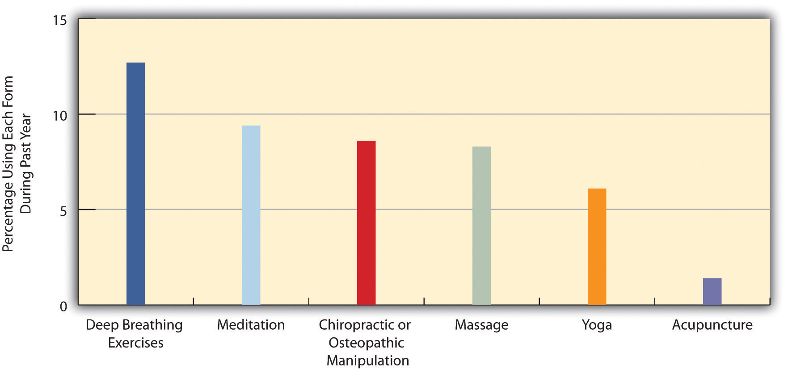

“Children’s Quality of Life Declining,” the headline said. A study from the Foundation for Child Development noted that more than 21% of American children were living in poverty in 2010, up 5% from 2006 and the highest rate in two decades. Child experts warned that the increasing poverty could impair children’s health. The sociologist who led the study worried that child obesity could increase as families were forced to move away from more expensive health food to processed and fast food. A child psychology professor said that people who grow up in poverty have higher rates of cancer, liver and respiratory disease, and other conditions. The president of the American Academy of Pediatrics agreed that family poverty is a health risk for children, who are more likely to be born prematurely and/or with low birth weight and to develop asthma and other health problems as they grow. She added that all these problems can have lifelong effects: “The consequences of poverty build on themselves, so that the outcomes can be felt for years to come.” (Landau, 2010; Szabo, 2010)Landau, E. (2010, June 8). Children’s quality of life declining, says report. CNN. Retrieved from http://www.cnn.com/2010/HEALTH/06/08/children.wellbeing; Szabo, L. (2010, June 8). More than 1 in 5 kids live in poverty. USA Today. Retrieved from http://www.usatoday.com/news/health/2010-06-08-1Achild08_ST_N.htm
This news story reminds us that social class is linked to health and illness, and it illustrates just one of the many ways in which health and medicine are an important part of the social fabric. Accordingly, this chapter examines the social aspects of health and medicine. It does not discuss the medical causes of various diseases and illnesses, and neither does it tell you how to become and stay healthy, as these are not, strictly speaking, sociological topics. But it will discuss the social bases for health and illnesses and some of today’s most important issues and problems in health care.
HealthThe extent of a person’s physical, mental, and social well-being. refers to the extent of a person’s physical, mental, and social well-being. This definition, taken from the World Health Organization’s treatment of health, emphasizes that health is a complex concept that involves not just the soundness of a person’s body but also the state of a person’s mind and the quality of the social environment in which she or he lives. The quality of the social environment in turn can affect a person’s physical and mental health, underscoring the importance of social factors for these twin aspects of our overall well-being.
MedicineThe social institution that seeks to prevent, diagnose, and treat illness and to promote health in its various dimensions. is the social institution that seeks both to prevent, diagnose, and treat illness and to promote health as just defined. Dissatisfaction with the medical establishment has been growing. Part of this dissatisfaction stems from soaring health-care costs and what many perceive as insensitive stinginess by the health insurance industry, as the 2009 battle over health-care reform illustrated. Some of the dissatisfaction also reflects a growing view that the social and even spiritual realms of human existence play a key role in health and illness. This view has fueled renewed interest in alternative medicine. We return later to these many issues for the social institution of medicine.
We usually think of health, illness, and medicine in individual terms. When a person becomes ill, we view the illness as a medical problem with biological causes, and a physician treats the individual accordingly. A sociological approach takes a different view. Unlike physicians, sociologists and other public health scholars do not try to understand why any one person becomes ill. Instead, they typically examine rates of illness to explain why people from certain social backgrounds are more likely than those from others to become sick. Here, as we will see, our social location in society—our social class, race and ethnicity, and gender—makes a critical difference.
The fact that our social backgrounds affect our health may be difficult for many of us to accept. We all know someone, and often someone we love, who has died from a serious illness or currently suffers from one. There is always a “medical” cause of this person’s illness, and physicians do their best to try to cure it and prevent it from recurring. Sometimes they succeed; sometimes they fail. Whether someone suffers a serious illness is often simply a matter of bad luck or bad genes: we can do everything right and still become ill. In saying that our social backgrounds affect our health, sociologists do not deny any of these possibilities. They simply remind us that our social backgrounds also play an important role (Cockerham, 2009).Cockerham, W. C. (2009). Medical sociology (11th ed.). Upper Saddle River, NJ: Prentice Hall.
A sociological approach also emphasizes that a society’s culture shapes its understanding of health and illness and practice of medicine. In particular, culture shapes a society’s perceptions of what it means to be healthy or ill, the reasons to which it attributes illness, and the ways in which it tries to keep its members healthy and to cure those who are sick (Hahn & Inborn, 2009).Hahn, R. A., & Inborn, M. (Eds.). (2009). Anthropology and public health: Bridging differences in culture and society (2nd ed.). New York, NY: Oxford University Press. Knowing about a society’s culture, then, helps us to understand how it perceives health and healing. By the same token, knowing about a society’s health and medicine helps us to understand important aspects of its culture.
An interesting example of culture in this regard is seen in Japan’s aversion to organ transplants, which are much less common in that nation than in other wealthy nations. Japanese families dislike disfiguring the bodies of the dead, even for autopsies, which are also much less common in Japan than other nations. This cultural view often prompts them to refuse permission for organ transplants when a family member dies, and it leads many Japanese to refuse to designate themselves as potential organ donors (Sehata & Kimura, 2009; Shinzo, 2004).Sehata, G., & Kimura, T. (2009, February 28). A decade on, organ transplant law falls short. The Daily Yomiuri [Tokyo], p. 3; Shinzo, K. (2004). Organ transplants and brain-dead donors: A Japanese doctor’s perspective. Mortality, 9(1), 13–26.
As culture changes over time, it is also true that perceptions of health and medicine may also change. Recall from Chapter 2 "Eye on Society: Doing Sociological Research" that physicians in top medical schools a century ago advised women not to go to college because the stress of higher education would disrupt their menstrual cycles (Ehrenreich & English, 2005).Ehrenreich, B., & English, D. (2005). For her own good: Two centuries of the experts’ advice to women (2nd ed.). New York, NY: Anchor Books. This nonsensical advice reflected the sexism of the times, and we no longer accept it now, but it also shows that what it means to be healthy or ill can change as a society’s culture changes.
A society’s culture matters in these various ways, but so does its social structure, in particular its level of economic development and extent of government involvement in health-care delivery. As we will see, poor societies have much worse health than richer societies. At the same time, richer societies have certain health risks and health problems, such as pollution and liver disease (brought on by high alcohol use), that poor societies avoid. The degree of government involvement in health-care delivery also matters: as we will also see, the United States lags behind many Western European nations in several health indicators, in part because the latter nations provide much more national health care than does the United States. Although illness is often a matter of bad luck or bad genes, the society we live in can nonetheless affect our chances of becoming and staying ill.
The major sociological perspectives on health and medicine all recognize these points but offer different ways of understanding health and medicine that fall into the functional, conflict, and symbolic interactionist approaches. Together they provide us with a more comprehensive understanding of health, medicine, and society than any one approach can do by itself (Cockerham, 2009).Cockerham, W. C. (2009). Medical sociology (11th ed.). Upper Saddle River, NJ: Prentice Hall. Table 18.1 "Theory Snapshot" summarizes what they say.
Table 18.1 Theory Snapshot
| Theoretical perspective | Major assumptions |
|---|---|
| Functionalism | Good health and effective medical care are essential for the smooth functioning of society. Patients must perform the “sick role” in order to be perceived as legitimately ill and to be exempt from their normal obligations. The physician-patient relationship is hierarchical: the physician provides instructions, and the patient needs to follow them. |
| Conflict theory | Social inequality characterizes the quality of health and the quality of health care. People from disadvantaged social backgrounds are more likely to become ill and to receive inadequate health care. Partly to increase their incomes, physicians have tried to control the practice of medicine and to define social problems as medical problems. |
| Symbolic interactionism | Health and illness are social constructions: Physical and mental conditions have little or no objective reality but instead are considered healthy or ill conditions only if they are defined as such by a society. Physicians “manage the situation” to display their authority and medical knowledge. |
As conceived by Talcott Parsons (1951),Parsons, T. (1951). The social system. New York, NY: Free Press. the functionalist perspective on health and medicine emphasizes that good health and effective medical care are essential for a society’s ability to function. Ill health impairs our ability to perform our roles in society, and if too many people are unhealthy, society’s functioning and stability suffer. This was especially true for premature death, said Parsons, because it prevents individuals from fully carrying out all their social roles and thus represents a “poor return” to society for the various costs of pregnancy, birth, child care, and socialization of the individual who ends up dying early. Poor medical care is likewise dysfunctional for society, as people who are ill face greater difficulty in becoming healthy and people who are healthy are more likely to become ill.
For a person to be considered legitimately sick, said Parsons, several expectations must be met. He referred to these expectations as the sick roleExpectations of how people are supposed to think and act when they are ill.. First, sick people should not be perceived as having caused their own health problem. If we eat high-fat food, become obese, and have a heart attack, we evoke less sympathy than if we had practiced good nutrition and maintained a proper weight. If someone is driving drunk and smashes into a tree, there is much less sympathy than if the driver had been sober and skidded off the road in icy weather.
Second, sick people must want to get well. If they do not want to get well or, worse yet, are perceived as faking their illness or malingering after becoming healthier, they are no longer considered legitimately ill by the people who know them or, more generally, by society itself.
Third, sick people are expected to have their illness confirmed by a physician or other health-care professional and to follow the professional’s advice and instructions in order to become well. If a sick person fails to do so, she or he again loses the right to perform the sick role.
If all of these expectations are met, said Parsons, sick people are treated as sick by their family, their friends, and other people they know, and they become exempt from their normal obligations to all these people. Sometimes they are even told to stay in bed when they want to remain active.
Physicians also have a role to perform, said Parsons. First and foremost, they have to diagnose the person’s illness, decide how to treat it, and help the person become well. To do so, they need the cooperation of the patient, who must answer the physician’s questions accurately and follow the physician’s instructions. Parsons thus viewed the physician-patient relationship as hierarchical: the physician gives the orders (or, more accurately, provides advice and instructions), and the patient follows them.
Parsons was certainly right in emphasizing the importance of individuals’ good health for society’s health, but his perspective has been criticized for several reasons. First, his idea of the sick role applies more to acute (short-term) illness than to chronic (long-term) illness. Although much of his discussion implies a person temporarily enters a sick role and leaves it soon after following adequate medical care, people with chronic illnesses can be locked into a sick role for a very long time or even permanently. Second, Parsons’s discussion ignores the fact, mentioned earlier, that our social location in society in the form of social class, race and ethnicity, and gender affects both the likelihood of becoming ill and the quality of medical care we receive. Third, Parsons wrote approvingly of the hierarchy implicit in the physician-patient relationship. Many experts say today that patients need to reduce this hierarchy by asking more questions of their physicians and by taking a more active role in maintaining their health. To the extent that physicians do not always provide the best medical care, the hierarchy that Parsons favored is at least partly to blame.
The conflict approach emphasizes inequality in the quality of health and of health-care delivery (Conrad, 2009).Conrad, P. (Ed.). (2009). Sociology of health and illness: Critical perspectives (8th ed.). New York, NY: Worth. As noted earlier, the quality of health and health care differ greatly around the world and within the United States. Society’s inequities along social class, race and ethnicity, and gender lines are reproduced in our health and health care. People from disadvantaged social backgrounds are more likely to become ill, and once they do become ill, inadequate health care makes it more difficult for them to become well. As we will see, the evidence of inequities in health and health care is vast and dramatic.
The conflict approach also critiques the degree to which physicians over the decades have tried to control the practice of medicine and to define various social problems as medical ones. Their motivation for doing so has been both good and bad. On the good side, they have believed that they are the most qualified professionals to diagnose problems and treat people who have these problems. On the negative side, they have also recognized that their financial status will improve if they succeed in characterizing social problems as medical problems and in monopolizing the treatment of these problems. Once these problems become “medicalized,” their possible social roots and thus potential solutions are neglected.
Several examples illustrate conflict theory’s criticism. Alternative medicine is becoming increasingly popular (see Chapter 18 "Health and Medicine", Section 18.4 "Medicine and Health Care in the United States"), but so has criticism of it by the medical establishment. Physicians may honestly feel that medical alternatives are inadequate, ineffective, or even dangerous, but they also recognize that the use of these alternatives is financially harmful to their own practices. Eating disorders also illustrate conflict theory’s criticism. Many of the women and girls who have eating disorders receive help from a physician, a psychiatrist, a psychologist, or another health-care professional. Although this care is often very helpful, the definition of eating disorders as a medical problem nonetheless provides a good source of income for the professionals who treat it and obscures its cultural roots in society’s standard of beauty for women (Whitehead & Kurz, 2008).Whitehead, K., & Kurz, T. (2008). Saints, sinners and standards of femininity: Discursive constructions of anorexia nervosa and obesity in women’s magazines. Journal of Gender Studies, 17, 345–358.
Obstetrical care provides another example. In most of human history, midwives or their equivalent were the people who helped pregnant women deliver their babies. In the 19th century, physicians claimed they were better trained than midwives and won legislation giving them authority to deliver babies. They may have honestly felt that midwives were inadequately trained, but they also fully recognized that obstetrical care would be quite lucrative (Ehrenreich & English, 2005).Ehrenreich, B., & English, D. (2005). For her own good: Two centuries of the experts’ advice to women (2nd ed.). New York, NY: Anchor Books. In a final example, many hyperactive children are now diagnosed with ADHD, or attention deficit/hyperactivity disorder. A generation or more ago, they would have been considered merely as overly active. After Ritalin, a drug that reduces hyperactivity, was developed, their behavior came to be considered a medical problem and the ADHD diagnosis was increasingly applied, and tens of thousands of children went to physicians’ offices and were given Ritalin or similar drugs. The definition of their behavior as a medical problem was very lucrative for physicians and for the company that developed Ritalin, and it also obscured the possible roots of their behavior in inadequate parenting, stultifying schools, or even gender socialization, as most hyperactive kids are boys (Conrad, 2008; Rao & Seaton, 2010).Conrad, P. (2008). The medicalization of society: On the transformation of human conditions into treatable disorders. Baltimore, MD: Johns Hopkins University Press; Rao, A., & Seaton, M. (2010). The way of boys: Promoting the social and emotional development of young boys. New York, NY: Harper Paperbacks.
Critics of the conflict approach say that its assessment of health and medicine is overly harsh and its criticism of physicians’ motivation far too cynical. Scientific medicine has greatly improved the health of people in the industrial world; even in the poorer nations, moreover, health has improved from a century ago, however inadequate it remains today. Although physicians are certainly motivated, as many people are, by economic considerations, their efforts to extend their scope into previously nonmedical areas also stem from honest beliefs that people’s health and lives will improve if these efforts succeed. Certainly there is some truth in this criticism of the conflict approach, but the evidence of inequality in health and medicine and of the negative aspects of the medical establishment’s motivation for extending its reach remains compelling.
The interactionist approach emphasizes that health and illness are social constructions. This means that various physical and mental conditions have little or no objective reality but instead are considered healthy or ill conditions only if they are defined as such by a society and its members (Buckser, 2009; Lorber & Moore, 2002).Buckser, A. (2009). Institutions, agency, and illness in the making of Tourette syndrome. Human Organization, 68(3), 293–306; Lorber, J., & Moore, L. J. (2002). Gender and the social construction of illness (2nd ed.). Lanham, MD: Rowman & Littlefield. The ADHD example just discussed also illustrates interactionist theory’s concerns, as a behavior that was not previously considered an illness came to be defined as one after the development of Ritalin. In another example, in the late 1800s opium use was quite common in the United States, as opium derivatives were included in all sorts of over-the-counter products. Opium use was considered neither a major health nor legal problem. That changed by the end of the century, as prejudice against Chinese Americans led to the banning of the opium dens (similar to today’s bars) they frequented, and calls for the banning of opium led to federal legislation early in the 20th century that banned most opium products except by prescription (Musto, 2002).Musto, D. F. (Ed.). (2002). Drugs in America: A documentary history. New York, NY: New York University Press.
In a more current example, an attempt to redefine obesity is now under way in the United States. Obesity is a known health risk, but a “fat pride” movement composed mainly of heavy individuals is arguing that obesity’s health risks are exaggerated and calling attention to society’s discrimination against overweight people. Although such discrimination is certainly unfortunate, critics say the movement is going too far in trying to minimize obesity’s risks (Saulny, 2009).Saulny, S. (2009, November 7). Heavier Americans push back on health debate. The New York Times, p. A23.
The symbolic interactionist approach has also provided important studies of the interaction between patients and health-care professionals. Consciously or not, physicians “manage the situation” to display their authority and medical knowledge. Patients usually have to wait a long time for the physician to show up, and the physician is often in a white lab coat; the physician is also often addressed as “Doctor,” while patients are often called by their first name. Physicians typically use complex medical terms to describe a patient’s illness instead of the more simple terms used by laypeople and the patients themselves.
Management of the situation is perhaps especially important during a gynecological exam. When the physician is a man, this situation is fraught with potential embarrassment and uneasiness because a man is examining and touching a woman’s genital area. Under these circumstances, the physician must act in a purely professional manner. He must indicate no personal interest in the woman’s body and must instead treat the exam no differently from any other type of exam. To further “desex” the situation and reduce any potential uneasiness, a female nurse is often present during the exam (Cullum-Swan, 1992).Cullum-Swan, B. (1992). Behavior in public places: A frame analysis of gynecological exams. Paper presented at the American Sociological Association, Pittsburgh, PA.
Critics fault the symbolic interactionist approach for implying that no illnesses have objective reality. Many serious health conditions do exist and put people at risk for their health regardless of what they or their society thinks. Critics also say the approach neglects the effects of social inequality for health and illness. Despite these possible faults, the symbolic interactionist approach reminds us that health and illness do have a subjective as well as an objective reality.
As with many topics in sociology, understanding what happens in other societies and cultures helps us to understand what happens in our own society. This section’s discussion of health and health care across the globe, then, helps shed some light on what is good and bad about U.S. health and medicine.
Two-thirds of the 33 million people worldwide who have HIV/AIDS live in sub-Saharan Africa. This terrible fact illustrates just one of the many health problems that people in poor nations suffer.
Source: Photo courtesy of khym54, http://www.flickr.com/photos/khym54/144915009.
The nations of the world differ dramatically in the quality of their health and health care. The poorest nations suffer terribly. Their people suffer from poor nutrition, unsafe water, inadequate sanitation, a plethora of diseases, and inadequate health care. One disease they suffer from is AIDS. Some 33 million people worldwide have HIV/AIDS, and two-thirds of these live in sub-Saharan Africa. Two million people, most of them from this region, died in 2008 from HIV/AIDS (World Health Organization, 2010).World Health Organization. (2010). WHO and HIV/AIDS. Retrieved from http://www.who.int/hiv/en/index.html All of these problems produce high rates of infant mortality and maternal mortality and high death rates. For all of these reasons, people in the poorest nations have shorter life spans than those in the richest nations.
A few health indicators should indicate the depth of the problem. Figure 18.1 "Infant Mortality for Low Income, Lower Middle Income, Higher Middle Income, and High Income Nations, 2008" compares an important indicator, infant mortality (number of deaths before age 1 per 1,000 live births) for nations grouped into four income categories. The striking contrast between the two groups provides dramatic evidence of the health problems poor nations face. When, as Figure 18.1 "Infant Mortality for Low Income, Lower Middle Income, Higher Middle Income, and High Income Nations, 2008" indicates, 80 children in the poorest nations die before their first birthday for every 1,000 live births (equivalent to 8 out of 100), the poor nations have serious problems indeed. Figure 18.2 "Percentage of Population With Access to Adequate Sanitation Facilities, 2008" shows how the world differs in access to adequate sanitation facilities (i.e., the removal of human waste from the physical environment, as by toilets). Whereas this percentage is at least 98% in the wealthy nations of North America, Western Europe, Australia, and New Zealand, it is less than 33% in many poor nations in Africa and Asia.
Figure 18.1 Infant Mortality for Low Income, Lower Middle Income, Higher Middle Income, and High Income Nations, 2008
Source: Data from World Bank. (2010). Health nutrition and population statistics. Retrieved from http://databank.worldbank.org/ddp/home.do?Step=2&id=4.
Figure 18.2 Percentage of Population With Access to Adequate Sanitation Facilities, 2008
Source: Adapted from World Bank. (2010). Improved sanitation facilities (% of population with access). Retrieved from http://ddp-ext.worldbank.org/ext/ddpreports/ViewSharedReport?&CF=&REPORT_ID=5558&REQUEST_TYPE=VIEWADVANCEDMAP.
Chapter 9 "Global Stratification" presented an international map on life expectancy. That map was certainly relevant for understanding aging around the globe but is also relevant for understanding worldwide disparities in health and health care. We reproduce this map here (see Figure 18.3 "Average Life Expectancy Across the Globe (Years)"). Not surprisingly, the global differences in this map are similar to those for adequate sanitation in the map depicted in Figure 18.2 "Percentage of Population With Access to Adequate Sanitation Facilities, 2008". North America, Western Europe, Australia, and New Zealand have much longer life expectancies (75 years and higher) than Africa and Asia, where some nations have expectancies below 50 years. The society we live in can affect our life span by more than a quarter of a century.
Figure 18.3 Average Life Expectancy Across the Globe (Years)
Source: Adapted from Global Education Project. (2004). Human conditions: World life expectancy map. Retrieved from http://www.theglobaleducationproject.org/earth/human-conditions.php.
Industrial nations throughout the world, with the notable exception of the United States, provide their citizens with some form of national health care and national health insuranceA system of medicine in which the government pays all or most of the costs of health care, prescriptions, and other items for the entire population. (Reid, 2009).Reid, T. R. (2009). The healing of America: A global quest for better, cheaper, and fairer health care. New York, NY: Penguin Press. Although their health-care systems differ in several respects, their governments pay all or most of the costs for health care, drugs, and other health needs. In Denmark, for example, the government provides free medical care and hospitalization for the entire population and pays for some medications and some dental care. In France, the government pays for some of the medical, hospitalization, and medication costs for most people and all of these expenses for the poor, unemployed, and children under the age of 10. In Great Britain, the National Health Service pays most medical costs for the population, including medical care, hospitalization, prescriptions, dental care, and eyeglasses. In Canada, the National Health Insurance system also pays for most medical costs. Patients do not even receive bills from their physicians, who instead are paid by the government.
Although these national health insurance programs are not perfect—for example, people sometimes must wait for elective surgery and some other procedures—they are commonly credited with reducing infant mortality, extending life expectancy, and more generally for enabling their citizenries to have relatively good health. In all of these respects, these systems offer several advantages over the health-care model found in the United States (Hacker, 2008)Hacker, J. S. (Ed.). (2008). Health at risk: America’s ailing health system—and how to heal it. New York, NY: Columbia Univeristy Press. (see the “Learning From Other Societies” box).
National Health Care in Wealthy Nations
As the text discusses, industrial nations other than the United States provide free or low-cost health care to their citizens in what is known as national (or universal) health insurance and national health care. Although the United States spends more per capita than these nations on health care, it generally ranks much lower than they do on important health indicators. Of 23 wealthy nations from North America, Western Europe, and certain other parts of the world (Australia, Japan, New Zealand; the exact number of nations varies slightly by indicator), the United States has the lowest life expectancy and the highest infant mortality and rate of diabetes. It ranks only 21st in mortality from heart disease and stroke and only 15th in dental health among children. The United States also ranks lowest for annual doctor consultations per capita and among the highest for hospital admissions for various conditions, such as congestive heart failure, that are avoidable with adequate primary and outpatient care (Organisation for Economic Co-operation and Development, 2009).Organisation for Economic Co-operation and Development. (2009). Health at a glance 2009: OECD indicators. Paris, France: Author. The conclusion from these international comparisons is inescapable:
Although the United States spends more on health care than other countries with similar per capita income and populations, it has worse health outcomes, on average.…Compared to the United States, other countries are more committed to the health and well-being of their citizens through more-universal coverage and more-comprehensive health care systems. (Mishel, Bernstein, & Shierholz, 2009, pp. 349, 353)Mishel, L., Bernstein, J., & Shierholz, H. (2009). The state of working America 2008/2009. Ithaca, NY: ILR Press [An imprint of Cornell University Press].
Because of Canada’s proximity, many studies compare health and health-care indicators between the United States and Canada. A recent review summarized the evidence: “Although studies’ findings go in both directions, the bulk of the research finds higher quality of care in Canada” (Docteur & Berenson, 2009, p. 7).Docteur, E., & Berenson, R. A. (2009). How does the quality of U.S. health care compare internationally? Washington, DC: Urban Institute.
Surveys of random samples of citizens in several nations provide additional evidence of the advantages of the type of health care found outside the United States and the disadvantages of the U.S. system. In surveys in 2007 of U.S. residents and those of six other nations (Australia, Canada, Germany, the Netherlands, New Zealand, and the United Kingdom), Americans ranked highest in the percentage uninsured (16% in the United States compared to 0%–2% elsewhere), highest in the percentage that did not receive needed medical care during the last year because of costs, and highest by far in the percentage that had “serious problems” in paying medical bills in the past year (Schoen et al., 2007).Schoen, C., Osborn, R., Doty, M. M., Bishop, M., Peugh, J., & Murukutla, N. (2007). Toward higher-performance health systems: Adults’ health care experiences in seven countries, 2007. Health Affairs 26(6), w717–w734.
A fair conclusion from all the evidence is that U.S. health lags behind that found in other wealthy nations because the latter provide free or low-cost national health care to their citizens and the United States does not. If so, the United States has much to learn from their example. Because the health-care reform achieved in the United States in 2009 and 2010 did not include a national health-care model, the United States will likely continue to lag behind other democracies in the quality of health and health care. Even so, the cost of health care will certainly continue to be much higher in the United States than in other Western nations, in part because the United States uses a fee-for-service model in which physicians are paid for every procedure they do rather than the set salary that some other nations feature.
When we examine health and illness in the United States, there is both good news and bad news. The good news is considerable. Health has improved steadily over the last century, thanks in large part to better public sanitation and the discovery of antibiotics. Illnesses and diseases such as pneumonia and polio that used to kill or debilitate people are either unknown today or treatable by modern drugs. Other medical discoveries and advances have also reduced the extent and seriousness of major illnesses, including many types of cancer, and have prolonged our lives. The mortality rate from heart disease is down 50% from the early 1980s, and the mortality rate from strokes is down about 51% (Centers for Disease Control and Prevention, 2010).Centers for Disease Control and Prevention. (2010). Mortality by underlying and multiple cause, ages 18+: US, 1981–2006. Retrieved from http://205.207.175.93/HDI/TableViewer/summary.aspx?ReportId=166
As a result of all of these factors, the U.S. average life expectancy climbed from about 47 years in 1900 to about 78 years in 2010 (recall Figure 9.7 "Average Life Expectancy Across the Globe (Years)"). Similarly, infant mortality dropped dramatically in the last half-century from 29.2 infant deaths per 1,000 live births in 1950 to only 6.7 in 2006 (see Figure 18.4 "Infant Deaths per 1,000 Live Births, United States, 1950–2006"). Public health campaigns have increased awareness of the sources and seriousness of some health problems and led to behavioral changes and, for some problems, legislation that has reduced these problems. For example, cigarette smoking declined from 51% for males and 34% for females in 1965 to 22% and 17.5%, respectively, in 2007 (National Center for Health Statistics, 2009).National Center for Health Statistics. (2009). Health, United States, 2009. Hyattsville, MD: Centers for Disease Control and Prevention. In another area, various policies during the past three decades have dramatically reduced levels of lead in young children’s blood; 88% had unsafe levels in the mid-1970s, compared to less than 2% today (Centers for Disease Control and Prevention, 2007).Centers for Disease Control and Prevention. (2007). Interpreting and managing blood lead levels <10 μg/dL in children and reducing childhood exposures to lead: Recommendations of CDC’s advisory committee on childhood lead poisoning prevention. MMWR (Morbidity and Mortality Weekly Report), 56(RR-8), 1–16.
Figure 18.4 Infant Deaths per 1,000 Live Births, United States, 1950–2006
Source: Data from National Center for Health Statistics. (2009). Health, United States, 2009. Hyattsville, MD: Centers for Disease Control and Prevention.
Unfortunately, the bad news is also considerable. While the United States has improved its health in many ways, it nonetheless lags behind most other wealthy nations in several health indicators, as we have seen, even though it is the wealthiest nation in the world. Moreover, about 15% of U.S. households and more than 32 million persons are “food-insecure” (lacking sufficient money for adequate food and nutrition) at least part of the year; more than one-fifth of all children live in such households (Nord, Andrews, & Carlson, 2009).Nord, M., Andrews, M., & Carlson, S. (2009). Household food security in the United States, 2008. Washington, DC: U.S. Department of Agriculture. More than 8% of all infants are born at low birth weight (under 5.5 pounds), putting them at risk for long-term health problems; this figure has risen steadily for a number of years and is higher than the 1970 rate (National Center for Health Statistics, 2009).National Center for Health Statistics. (2009). Health, United States, 2009. Hyattsville, MD: Centers for Disease Control and Prevention. In other areas, childhood rates of obesity, asthma, and some other chronic conditions are on the rise, with about one-third of children considered obese or overweight (Van Cleave, Gortmaker, & Perrin, 2010).Van Cleave, J., Gortmaker, S. L., & Perrin, J. M. (2010). Dynamics of obesity and chronic health conditions among children and youth. JAMA, 303(7), 623–630. Clearly the United States still has a long way to go in improving the nation’s health.
There is also bad news in the social distribution of health. Health problems in the United States are more often found among the poor, among people from certain racial and ethnic backgrounds, and, depending on the problem, among women or men. Social epidemiologyThe study of how health and illness vary by social and demographic characteristics such as social class, race and ethnicity, and gender. refers to the study of how health and illness vary by sociodemographic characteristics. When we examine social epidemiology in the United States, we see that the distribution of health and illness depends heavily on our social location in society. In this way, health and illness both reflect and reinforce society’s social inequalities. The next section discusses some of the key findings on U.S. social epidemiology and the reasons for disparities they illustrate. We start with physical health and then discuss mental health.
Not only do the poor have less money, but they also have much worse health. There is growing recognition in the government and in medical and academic communities that social class makes a huge difference when it comes to health and illness. A recent summary of the evidence concluded that social class inequalities in health are “pervasive” in the United States and other nations across the world (Elo, 2009, p. 553).Elo, I. T. (2009). Social class differentials in health and mortality: Patterns and explanations in comparative perspective. Annual Review of Sociology, 35, 553–572.
Many types of health indicators illustrate the social class–health link in the United States. In an annual survey conducted by the government, people are asked to indicate the quality of their health. As Figure 18.5 "Family Income and Self-Reported Health (Percentage of People 18 or Over Saying Health Is Only Fair or Poor)" shows, poor people are much more likely than those with higher incomes to say their health is only fair or poor. These self-reports of health are subjective indicators, and it is possible that not everyone interprets “fair” or “poor” health in the same way. But objective indicators of actual health also indicate a strong social class–health link, with some of the most unsettling evidence involving children. As a recent report concluded,
The data illustrate a consistent and striking pattern of incremental improvements in health with increasing levels of family income and educational attainment: As family income and levels of education rise, health improves. In almost every state, shortfalls in health are greatest among children in the poorest or least educated households, but even middle-class children are less healthy than children with greater advantages. (Robert Wood Johnson Foundation, 2008, p. 2)Robert Wood Johnson Foundation. (2008). America’s health starts with healthy children: How do states compare? Princeton, NJ: Robert Wood Johnson Foundation.
For example, infant mortality is 86% higher among infants born to mothers without a high school degree than those with a college degree, and low birth weight is 29% higher. According to their parents, one-third of children in poor families are in less than very good health, compared to only 7% of children in wealthy families (at least 4 times the poverty level). In many other health indicators, as the news story that began this chapter indicated, children in low-income families are more likely than children in wealthier families to have various kinds of health problems, many of which endure into adolescence and adulthood.
Figure 18.5 Family Income and Self-Reported Health (Percentage of People 18 or Over Saying Health Is Only Fair or Poor)
Source: Data from National Center for Health Statistics. (2009). Health, United States, 2009. Hyattsville, MD: Centers for Disease Control and Prevention.
Poor adults are also at much greater risk for many health problems, including heart disease, diabetes, arthritis, and some types of cancer (National Center for Health Statistics, 2009).National Center for Health Statistics. (2009). Health, United States, 2009. Hyattsville, MD: Centers for Disease Control and Prevention. Rates of high blood pressure, serious heart conditions, and diabetes are at least twice as high for middle-aged adults with family incomes below the poverty level than for those with incomes at least twice the poverty level. All of these social class differences in health contribute to a striking difference in life expectancy, with the wealthiest Americans expected to live four and a half years longer on average than the poorest Americans (Pear, 2008).Pear, R. (2008, March 23). Gap in life expectancy widens for the nation. The New York Times. Retrieved from http://www.nytimes.com/2008/03/23/us/23health.html?scp= 1&sq=Gap%20in%20life%20expectancy%20widens%20for%20the%20nation&st=cse
Several reasons account for the social class–health link (Elo, 2009; Pampel, Krueger, & Denney, 2010).Elo, I. T. (2009). Social class differentials in health and mortality: Patterns and explanations in comparative perspective. Annual Review of Sociology, 35, 553–572; Pampel, F. C., Krueger, P. M., & Denney, J. T. (2010, June). Socioeconomic disparities in health behaviors. Annual Review of Sociology, 36, 349–370. doi:10.1146/annurev.soc.012809.102529 One reason is stress, which is higher for people with low incomes because of unemployment, problems in paying for the necessities of life, and a sense of little control over what happens to them. Stress in turn damages health because it impairs the immune system and other bodily processes (Lantz, House, Mero, & Williams, 2005).Lantz, P. M., House, J. S., Mero, R. P., & Williams, D. R. (2005). Stress, life events, and socioeconomic disparities in health: Results from the Americans’ Changing Lives Study. Journal of Health and Social Behavior, 3, 274–288. A second reason is that poor people live in conditions, including crowded, dilapidated housing with poor sanitation, that are bad for their health and especially that of their children (Stewart & Rhoden, 2006).Stewart, J., & Rhoden, M. (2006). Children, housing and health. International Journal of Sociology and Social Policy, 26, 7–8. Although these conditions have improved markedly in the United States over the last few decades, they continue for many of the poor.
Another reason is the lack of access to adequate health care. As is well known, many poor people lack medical insurance and in other respects have inadequate health care. These problems make it more likely they will become ill in the first place and more difficult for them to become well because they cannot afford to visit a physician or to receive other health care. Still, social class disparities in health exist even in countries that provide free national health care, a fact that underscores the importance of the other reasons discussed here for the social class–health link (Elo, 2009).Elo, I. T. (2009). Social class differentials in health and mortality: Patterns and explanations in comparative perspective. Annual Review of Sociology, 35, 553–572.
A fourth reason is a lack of education, which, in ways not yet well understood, leads poor people to be unaware of risk factors for health and to have a fatalistic attitude that promotes unhealthy behaviors and reluctance to heed medical advice (Elo, 2009).Elo, I. T. (2009). Social class differentials in health and mortality: Patterns and explanations in comparative perspective. Annual Review of Sociology, 35, 553–572. In one study of whether smokers quit smoking after a heart attack, only 10% of heart attack patients without a high school degree quit smoking, compared to almost 90% of those with a college degree (Wray, Herzog, Willis, & Wallace, 1998).Wray, L. A., Herzog, A. R., Willis, R. J., & Wallace, R. B. (1998). The impact of education and heart attack on smoking cessation among middle-aged adults. Journal of Health and Social Behavior, 39, 271–294.
A final and related reason for the poor health of poor people is unhealthy lifestyles, as just implied. Although it might sound like a stereotype, poor people are more likely to smoke, to eat high-fat food, to avoid exercise, to be overweight, and, more generally, not to do what they need to do (or to do what they should not be doing) to be healthy (Pampel, Krueger, & Denney, 2010; Cubbins & Buchanan, 2009).Pampel, F. C., Krueger, P. M., & Denney, J. T. (2010, June). Socioeconomic disparities in health behaviors. Annual Review of Sociology, 36, 349–370. doi:10.1146/annurev.soc.012809.102529; Cubbins, L. A., & Buchanan, T. (2009). Racial/ethnic disparities in health: The role of lifestyle, education, income, and wealth. Sociological Focus, 42(2), 172–191. Scholars continue to debate whether unhealthy lifestyles are more important in explaining poor people’s poor health than factors such as lack of access to health care, stress, and other negative aspects of the social and physical environments in which poor people live. Regardless of the proper mix of reasons, the fact remains that the poor have worse health.
In assessing the social class–health link, we have been assuming that poverty leads to poor health. Yet it is also possible that poor health leads to poverty or near-poverty because of high health-care expenses and decreased work hours. Recent evidence supports this causal linkage, as serious health problems in adulthood often do force people to reduce their work hours or even to retire altogether (J. P. Smith, 2005).Smith, J. P. (2005). Unraveling the SES-health connection [Supplemental material]. Population and Development Review, 30, 108–132. Although this linkage accounts for some of the social class–health relationship that is so noticeable, evidence of the large impact of low income on poor health remains compelling.
Health differences also exist when we examine the effects of race and ethnicity (Barr, 2008),Barr, D. A. (2008). Health disparities in the United States: Social class, race, and health. Baltimore, MD: Johns Hopkins University Press. and they are literally a matter of life and death. We can see this when we compare life expectancies for whites and African Americans born in 2006 (Table 18.2 "U.S. Life Expectancy at Birth for People Born in 2006"). When we do not take gender into account, African Americans can expect to live 5 fewer years than whites. Among men, they can expect to live 6 fewer years, and among women, 4.1 fewer years.
Table 18.2 U.S. Life Expectancy at Birth for People Born in 2006
| African American | Both sexes | 73.2 |
| Men | 69.7 | |
| Women | 76.5 | |
| White | Both sexes | 78.2 |
| Men | 75.7 | |
| Women | 80.6 |
Source: Data from National Center for Health Statistics. (2009). Health, United States, 2009. Hyattsville, MD: Centers for Disease Control and Prevention.
At the beginning of the life course, infant mortality also varies by race and ethnicity (Table 18.3 "Mother’s Race/Ethnicity and U.S. Infant Mortality, 2003–2005 (Average Annual Number of Infant Deaths per 1,000 Live Births)"), with African American infants more than twice as likely as white infants to die before their first birthday. Infant mortality among Native Americans is almost 1.5 times the white rate, while that for Latinos is about the same (although the Puerto Rican rate is also higher, at 8.1), and Asians a bit lower. In a related indicator, maternal mortality (from complications of pregnancy or childbirth) stands at 8.0 maternal deaths for every 100,000 live births for non-Latina white women, 8.8 for Latina women, and a troubling 28.7 for African American women. Maternal mortality for African American women is thus 3.5 times greater than that for non-Latina white women. In other indicators, African Americans are more likely than whites to die from heart disease, although the white rate of such deaths is higher than the rates of Asians, Latinos, and Native Americans. African Americans are also more likely than whites to be overweight and to suffer from asthma, diabetes, high blood pressure, and several types of cancer. Latinos and Native Americans have higher rates than whites of several illnesses and conditions, including diabetes.
Table 18.3 Mother’s Race/Ethnicity and U.S. Infant Mortality, 2003–2005 (Average Annual Number of Infant Deaths per 1,000 Live Births)
| African American | 13.3 |
| Asian | 4.8 |
| Latina | 5.6 |
| Central and South American | 4.8 |
| Cuban | 4.5 |
| Mexican | 5.5 |
| Puerto Rican | 8.1 |
| Native American | 8.4 |
| White | 5.7 |
Source: Data from National Center for Health Statistics. (2009). Health, United States, 2009. Hyattsville, MD: Centers for Disease Control and Prevention.
Commenting on all of these disparities in health, a former head of the U.S. Department of Health and Human Services said a decade ago, “We have been—and remain—two nations: one majority, one minority—separated by the quality of our health” (Penn et al., 2000, p. 102).Penn, N. E., Kramer, J., Skinner, J. F., Velasquez, R. J., Yee, B. W. K., Arellano, L. M., & Williams, J. P. (2000). Health practices and health-care systems among cultural groups. In R. M. Eisler & M. Hersen (Eds.), Handbook of gender, culture, and health (pp. 101–132). New York, NY: Routledge. The examples just discussed certainly indicate that her statement is still true today.
Why do such large racial and ethnic disparities in health exist? To a large degree, they reflect the high poverty rates for African Americans, Latinos, and Native Americans compared to those for whites (Cubbins & Buchanan, 2009).Cubbins, L. A., & Buchanan, T. (2009). Racial/ethnic disparities in health: The role of lifestyle, education, income, and wealth. Sociological Focus, 42(2), 172–191. In addition, inadequate medical care is perhaps a special problem for people of color, thanks to unconscious racial bias among health-care professionals that affects the quality of care that people of color receive (see discussion later in this chapter).
An additional reason for racial disparities in health is diet. Many of the foods that have long been part of African American culture are high in fat. Partly as a result, African Americans are much more likely than whites to have heart disease and high blood pressure and to die from these conditions (Lewis-Moss, Paschal, Redmond, Green, & Carmack, 2008).Lewis-Moss, R. K., Paschal, A., Redmond, M., Green, B. L., & Carmack, C. (2008). Health attitudes and behaviors of African American adolescents. Journal of Community Health, 33(5), 351–356. In contrast, first-generation Latinos tend to have diets consisting of beans, grains, and other low-fat foods, preventing health problems stemming from their poverty from being even worse. But as the years go by and they adopt the typical American’s eating habits, their diets tend to worsen, and their health worsens as well (Pérez-Escamilla, 2009).Pérez-Escamilla, R. (2009). Dietary quality among Latinos: Is acculturation making us sick? Journal of the American Dietetic Association, 109(6), 988–991.
In a significant finding, African Americans have worse health than whites even among those with the same incomes. This racial gap is thought to stem from several reasons. One is the extra stress that African Americans of all incomes face because they live in a society that is still racially prejudiced and discriminatory (Williams, Neighbors, & Jackson, J., 2008).Williams, D. R., Neighbors, H. W., & James S. Jackson, P. (2008). Racial/ethnic discrimination and health: Findings from community studies [Supplemental material]. American Journal of Public Health, 98, S29–S37. In this regard, a growing amount of research finds that African Americans and Latinos who have experienced the most racial discrimination in their daily lives tend to have worse physical health (Lee & Ferraro, 2009; Gee & Walsemann, 2009).Lee, M.-A., & Ferraro, K. F. (2009). Perceived discrimination and health among Puerto Rican and Mexican Americans: Buffering effect of the lazo matrimonial? Social Science & Medicine, 68, 1966–1974; Gee, G., & Walsemann, K. (2009). Does health predict the reporting of racial discrimination or do reports of discrimination predict health? Findings from the National Longitudinal Study of Youth. Social Science & Medicine, 68(9), 1676–1684. Some middle-class African Americans may also have grown up in poor families and incurred health problems in childhood that still affect them. As a former U.S. surgeon general once explained, “You’re never dealing with a person just today. You’re dealing with everything they’ve been exposed to throughout their lives. Does it ever end? Our hypothesis is that it never ends” (Meckler, 1998, p. 4A).Meckler, L. (1998, November 27). Health gap between races persists. Ocala [FL] Star-Banner, p. 4A.
To some degree, racial differences in health may also have a biological basis. For example, African American men appear to have higher levels of a certain growth protein that may promote prostate cancer; African American smokers may absorb more nicotine than white smokers; and differences in the ways African Americans’ blood vessels react may render them more susceptible to hypertension and heart disease (Meckler, 1998).Meckler, L. (1998, November 27). Health gap between races persists. Ocala [FL] Star-Banner, p. 4A. Because alleged biological differences have been used as the basis for racism, and because race is best thought of as a social construction rather than a biological concept (see Chapter 10 "Race and Ethnicity"), we have to be very careful in acknowledging such differences (Frank, 2007).Frank, R. (2007). What to make of it? The (re)emergence of a biological conceptualization of race in health disparities research. Social Science & Medicine, 64(10), 1977–1983. However, if they do indeed exist, they may help explain at least some of the racial gap in health.
A final factor contributing to racial differences in health is physical location: poor people of color tend to live in areas that are unhealthy places because of air and water pollution, hazardous waste, and other environmental problems. This problem is termed environmental racism (King & McCarthy, 2009).King, L., & McCarthy, D. (Eds.). (2009). Environmental sociology: From analysis to action (2nd ed.). Lanham, MD: Rowman & Littlefield. One example of this problem is found in the so-called Cancer Alley on a long stretch of the Mississippi River in Louisiana populated mostly by African Americans; 80% of these residents live within 3 miles of a polluting industrial facility.
The evidence on gender and health is both complex and fascinating. Women outlive men by more than 6 years, and, as Table 18.2 "U.S. Life Expectancy at Birth for People Born in 2006" showed, the gender difference in longevity persists across racial categories. At the same time, women have worse health than men in many areas. For example, they are much more likely to suffer from migraine headaches, osteoporosis, and immune diseases such as lupus and rheumatoid arthritis. Women thus have more health problems than men even though they outlive men, a situation commonly known as the morbidity paradox (Gorman & Read, 2006).Gorman, B. K., & Read, J. G. (2006). Gender disparities in adult health: An examination of three measures of morbidity. Journal of Health and Social Behavior, 47(2), 95–110. Why, then, do women outlive men? Conversely, why do men die earlier than women? The obvious answer is that men have more life-threatening diseases, such as heart disease and emphysema, than women, but that raises the question of why this is so.
Several reasons explain the gender gap in longevity. One might be biological, as women’s estrogen and other sex-linked biological differences may make them less susceptible to heart disease and other life-threatening illnesses, even as they render them more vulnerable to some of the problems already listed (Kuller, 2010).Kuller, L. H. (2010). Cardiovascular disease is preventable among women. Expert Review of Cardiovascular Therapy, 8(2), 175–187. A second reason is that men lead more unhealthy lifestyles than women because of differences in gender socialization. For example, men are more likely than women to smoke, to drink heavily, and to drive recklessly. All such behaviors make men more vulnerable than women to life-threatening illnesses and injuries (Gorman & Read, 2006).Gorman, B. K., & Read, J. G. (2006). Gender disparities in adult health: An examination of three measures of morbidity. Journal of Health and Social Behavior, 47(2), 95–110. Men are also more likely than women to hold jobs in workplaces filled with environmental hazards and other problems that are thought to kill thousands of people—most of them men—annually (Simon, 2008).Simon, D. R. (2008). Elite deviance (9th ed.). Boston, MA: Allyn & Bacon.
A final reason is men’s reluctance to discuss medical problems they have and to seek help for them, owing to their masculine socialization into being “strong, silent types.” Just as men do not like to ask for directions, as the common wisdom goes, so do they not like to ask for medical help. As one physician put it, “I’ve often said men don’t come in for checkups because they have a big S tattooed on their chests; they think they’re Superman” (Guttman, 1999, p. 10).Guttman, M. (1999, June 11–13). Why more men are finally going to the doctor. USA Weekend, p. 10. Studies find that men are less likely than women to tell anyone when they have a health problem and to seek help from a health-care professional (Emmers-Sommer et al., 2009).Emmers-Sommer, T. M., Nebel, S., Allison, M.-L., Cannella, M. L., Cartmill, D., Ewing, S.,…Wojtaszek, B. (2009). Patient-provider communication about sexual health: The relationship with gender, age, gender-stereotypical beliefs, and perceptions of communication inappropriateness. Sex Roles: A Journal of Research, 60, 9–10. When both sexes do visit a physician, men ask fewer questions than women do. In one study, the average man asked no more than two questions, while the average woman asked at least six. Because patients who ask more questions get more information and recover their health more quickly, men’s silence in the exam room may contribute to their shorter longevity (Foreman, 1999).Foreman, J. (1999, June 14). A visit most men would rather not make. The Boston Globe, p. C1. Interestingly, the development of erectile dysfunction drugs like Viagra may have helped improve men’s health, as men have had to visit physician’s offices to obtain prescriptions for these drugs when otherwise they would not have made an appointment (Guttman, 1999).Guttman, M. (1999, June 11–13). Why more men are finally going to the doctor. USA Weekend, p. 10.
We have just discussed why men die sooner than women, which is one of the two gender differences that constitute the morbidity paradox. The other gender difference concerns why women have more nonfatal health problems than men. Several reasons seem to account for this difference (Read & Gorman, 2010).Read, J. G., & Gorman, B. K. (2010, June). Gender and health inequality. Annual Review of Sociology, 36, 371–386. doi:10.1146/annurev.soc.012809.102535
One reason arises from the fact that women outlive men. Because women are thus more likely than men to be in their senior years, they are also more likely to develop the many health problems associated with old age. This suggests that studies that control for age (by comparing older women with older men, middle-aged women with middle-aged men, and so forth) should report fewer gender differences in health than those that do not control for age, and this is indeed true.
However, women still tend to have worse health than men even when age is taken into account. Medical sociologists attribute this gender difference to the gender inequality in the larger society (see the “Sociology Making a Difference” box). For example, women are poorer overall than men, as they are more likely to work only part time and in low-paying jobs even if they work full time. As discussed earlier in this chapter, poverty is a risk factor for health problems. Women’s worse health, then, is partly due to their greater likelihood of living in poverty or near-poverty. Because of their gender, women also are more likely than men to experience stressful events in their everyday lives, such as caring for a child or an aging parent, and their increased stress is an important cause of their greater likelihood of depression and the various physical health problems (weakened immune systems, higher blood pressure, lack of exercise) that depression often causes. Finally, women experience discrimination in their everyday lives because of our society’s sexism, and (as is also true for people of color) this discrimination is thought to produce stress and thus poorer physical health (Landry & Mercurio, 2009).Landry, L. J., & Mercurio, A. E. (2009). Discrimination and women’s mental health: The mediating role of control. Sex Roles: A Journal of Research, 61, 3–4.
Gender Inequality and Women’s Health
Research during the past two decades has established that women are more likely than men to have health problems that are not life threatening. The text discusses that a major reason for this gender difference is gender inequality in the larger society and, in particular, the low incomes that many women have. As sociologists Bridget K. Gorman and Jen’nan Ghazal Read (Gorman & Read, 2006, p. 96)Gorman, B. K., & Read, J. G. (2006). Gender disparities in adult health: An examination of three measures of morbidity. Journal of Health and Social Behavior, 47(2), 95–110. explain, “Women are more likely than men to work part time, participate in unwaged labor, and receive lower wages, all of which drives down their chances for good health.”
According to Gorman and Read, research on gender differences in health has failed to consider whether the size of this difference might vary by age. This research has also neglected measures of health beyond self-rated health, a common measure in many studies.
Gorman and Read addressed these research gaps with data on about 152,000 individuals from several years of the National Health Interview Survey, conducted annually by the federal government. Among other findings, women were much more likely than men overall to suffer from functional limitations (e.g., inability to walk steadily or to grasp small objects). When Gorman and Read controlled for age, this gender difference was greater for people in their middle and senior years than for those at younger ages. They also found that socioeconomic status was not related to functional limitations at younger ages but did predict these limitations at older ages (with poorer people more likely to have limitations). In an additional finding, socioeconomic status was strongly related to self-reported health at all ages.
The two sociologists drew a pair of policy conclusions from this set of findings. The first is the “need to understand and respond to women’s greater burden of functional limitations at every age of adulthood, particularly in middle and late life” (p. 108). The second is the need for public policy to “continue to address the causes and consequences of women’s disadvantaged social position relative to men,” as their finding on the importance of socioeconomic status “highlights the health gains for women that would accompany improvement in their socioeconomic standing” (p. 108). In calling attention to the need for public policy on women’s health to address women’s functional limitations and lower economic resources, Gorman and Read’s research was a fine example of sociology again making a difference.
Health consists of mental well-being as well as physical well-being, and people can suffer mental health problems in addition to physical health problems. Scholars disagree over whether mental illness is real or, instead, a social construction. The predominant view in psychiatry, of course, is that people do have actual problems in their mental and emotional functioning and that these problems are best characterized as mental illnesses or mental disorders and should be treated by medical professionals (Kring & Sloan, 2010).Kring, A. M., & Sloan, D. M. (Eds.). (2010). Emotion regulation and psychopathology: A transdiagnostic approach to etiology and treatment. New York, NY: Guilford Press. But other scholars, adopting a labeling approach (see Chapter 7 "Deviance, Crime, and Social Control"), say that mental illness is a social construction or a “myth” (Szasz, 2008).Szasz, T. (2008). Psychiatry: The science of lies. Syracuse, NY: Syracuse University Press. In their view, all kinds of people sometimes act oddly, but only a few are labeled as mentally ill. If someone says she or he hears the voice of an angel, we attribute their perceptions to their religious views and consider them religious, not mentally ill. But if someone instead insists that men from Mars have been in touch, we are more apt to think there is something mentally wrong with that person. Mental illness thus is not real but rather is the reaction of others to problems they perceive in someone’s behavior.
This intellectual debate notwithstanding, many people do suffer serious mental and emotional problems, such as severe mood swings and depression, that interfere with their everyday functioning and social interaction. Sociologists and other researchers have investigated the social epidemiology of these problems. Several generalizations seem warranted from their research (Cockerham, 2011).Cockerham, W. C. (2011). Sociology of mental disorder (8th ed.). Upper Saddle River, NJ: Prentice Hall.
First, social class affects the incidence of mental illness. To be more specific, poor people exhibit more mental health problems than richer people: they are more likely to suffer from schizophrenia, serious depression, and other problems (Mossakowski, 2008).Mossakowski, K. N. (2008). Dissecting the influence of race, ethnicity, and socioeconomic status on mental health in young adulthood. Research on Aging, 30(6), 649–671. A major reason for this link is the stress of living in poverty and the many living conditions associated with it. One interesting causal question here, analogous to that discussed earlier in assessing the social class–physical health link, is whether poverty leads to mental illness or mental illness leads to poverty. Although there is evidence of both causal paths, most scholars believe that poverty contributes to mental illness more than the reverse (Warren, 2009).Warren, J. R. (2009). Socioeconomic status and health across the life course: A test of the social causation and health selection hypotheses. Social Forces, 87(4), 2125–2153.
Second, there is no clear connection between race/ethnicity and mental illness, as evidence on this issue is mixed: although many studies find higher rates of mental disorder among people of color, some studies find similar rates to whites’ rates (Mossakowski, 2008).Mossakowski, K. N. (2008). Dissecting the influence of race, ethnicity, and socioeconomic status on mental health in young adulthood. Research on Aging, 30(6), 649–671. These mixed results are somewhat surprising because several racial/ethnic groups are poorer than whites and more likely to experience everyday discrimination, and for these reasons should exhibit more frequent symptoms of mental and emotional problems. Despite the mixed results, a fair conclusion from the most recent research is that African Americans and Latinos are more likely than whites to exhibit signs of mental distress (Mossakowski, 2008; Jang, Chiriboga, Kim, & Phillips, 2008; Araujo & Borrell, 2006).Mossakowski, K. N. (2008). Dissecting the influence of race, ethnicity, and socioeconomic status on mental health in young adulthood. Research on Aging, 30(6), 649–671; Jang, Y., Chiriboga, D. A., Kim, G., & Phillips, K. (2008). Depressive symptoms in four racial and ethnic groups: The Survey of Older Floridians (SOF). Research on Aging, 30(4), 488–502; Araujo, B. Y., & Borrell, L. N. (2006). Understanding the link between discrimination, mental health outcomes, and life chances among Latinos. Hispanic Journal of Behavioral Sciences, 28(2), 245–266.
Third, gender is related to mental illness but in complex ways, as the nature of this relationship depends on the type of mental disorder. Women have higher rates of manic-depressive disorders than men and are more likely to be seriously depressed, but men have higher rates of antisocial personality disorders that lead them to be a threat to others (Kort-Butler, 2009; Mirowsky & Ross, 1995).Kort-Butler, L. A. (2009). Coping styles and sex differences in depressive symptoms and delinquent behavior. Journal of Youth and Adolescence, 38(1), 122–136; Mirowsky, J., & Ross, C. E. (1995). Sex differences in distress: Real or artifact? American Sociological Review, 60, 449–468. Although some medical researchers trace these differences to sex-linked biological differences, sociologists attribute them to differences in gender socialization that lead women to keep problems inside themselves while encouraging men to express their problems outwardly, as through violence. To the extent that women have higher levels of depression and other mental health problems, the factors that account for their poorer physical health, including their higher rates of poverty and stress and rates of everyday discrimination, are thought to also account for their poorer mental health (Read & Gorman, 2010).Read, J. G., & Gorman, B. K. (2010, June). Gender and health inequality. Annual Review of Sociology, 36, 371–386. doi:10.1146/annurev.soc.012809.102535
As the health-care debate in 2009 and 2010 illustrates, the practice of medicine in the United States raises many important issues about its cost and quality. Before we discuss some of these issues, a brief discussion of the history of medicine will sketch how we have reached our present situation (Louden, 1997; Porter, 2006).Louden, I. (1997). Western medicine: An illustrated history. Oxford, England: Oxford University Press; Porter, R. (Ed.). (2006). The Cambridge history of medicine (Rev. ed.). New York, NY: Cambridge University Press.
The practice of medicine today in the United States and much of the rest of the globe follows a scientific approach. But scientific medicine is a relatively recent development in the history of the world. Prehistoric societies attributed illness to angry gods or to evil spirits that took over someone’s body. The development of scientific medicine since then illustrates one of the sociological insights discussed at the beginning of this chapter: the type of society influences its beliefs about health and ways of healing.
The roots of today’s scientific medicine go back to the ancient civilizations in the Middle East, Asia, and Greece and Rome, which began to view health and illness somewhat more scientifically. In ancient Egypt, for example, physicians developed some medications, such as laxatives, that are still used, and they also made advances in the treating of wounds and other injuries. The ancient Chinese developed several drugs, including arsenic, sulfur, and opium, that are also still used. Ancient India developed anesthesia, antidotes for poisonous snakebites, and several surgical techniques including amputation and the draining of abscesses (Porter, 2006).Porter, R. (Ed.). (2006). The Cambridge history of medicine (Rev. ed.). New York, NY: Cambridge University Press. Ancient Greece built medical schools in which dissection of animals was used to help understand human anatomy. Later, a Greek physician named Galen, who lived in Rome during the 100s A.D., wrote influential treatises on inflammation, infectious disease, and the muscular and spinal cord systems. Medical advances continued in the Middle Ages and the Renaissance, as various physicians wrote about smallpox, measles, and other diseases, and several medical schools and hospitals were established. Leonardo da Vinci and other scientists performed many dissections and produced hundreds of drawings of human anatomy. Other major advances, including the development of surgical techniques and the treatment of burns, were also made during this period.
What is now called modern medicine began in the 1600s, as scientists learned how blood circulates through the body and used microscopes to discover various germs, including bacteria. By the end of the 1800s, the germ theory of disease had become widely accepted, thanks largely to the work of Louis Pasteur and other scientists. Other key developments during this time included the discovery of ether gas as an effective anesthesia and the realization that surgery needed to be carried out under the strictest standards of cleanliness (Porter, 2006).Porter, R. (Ed.). (2006). The Cambridge history of medicine (Rev. ed.). New York, NY: Cambridge University Press. During the 1800s, the American Medical Association and other professional associations of physicians were founded to advance medical knowledge and standards and to help give physicians a monopoly over the practice of medicine (Starr, 1982).Starr, P. (1982). The social transformation of American medicine. New York, NY: Basic Books. In the early 1900s, scientists learned about the importance of vitamins, and penicillin was developed as the first antibiotic. Developments in immunology, physiology, and many other areas of medicine have advanced far beyond what we knew a century ago and remain too numerous and complex to discuss here.
Modern medicine began during the 17th century with the discovery by English physician William Harvey of how blood circulates through the body.
Scientific medicine has saved countless lives: life spans used to average no more than the age of 40 or so, as we have seen, but in industrial nations now average well into the 70s. Still, as we have also seen, huge disparities remain across the world today in life spans and the quality of health. Disparities also exist in the quality of health care across the world. In the United States, questions about the cost and effectiveness of health care have dominated the news. We now turn to some of these issues.
Medicine in the United States is big business. Expenditures for health care, health research, and other health items and services have risen sharply in recent years, having increased tenfold since 1980, and now costs the nation more than $2.6 trillion annually (see Figure 18.6 "U.S. Health-Care Expenditure, 1980–2010 (in Billions of Dollars)"). This translates to the largest figure per capita in the industrial world. Despite this expenditure, the United States lags behind many other industrial nations in several important health indicators, as we have already seen. Why is this so?
Figure 18.6 U.S. Health-Care Expenditure, 1980–2010 (in Billions of Dollars)
Source: Data from U.S. Census Bureau. (2010). Statistical abstract of the United States: 2010. Washington, DC: U.S. Government Printing Office. Retrieved from http://www.census.gov/compendia/statab.
As discussed earlier, other Western nations have national systems of health care and health insurance. In stark contrast to these nations, the United States relies on a direct-fee systemA system of medicine in which patients pay for health care, prescriptions, and other medical costs themselves., in which patients are expected to pay for medical costs themselves, aided by private health insurance, usually through one’s employer. Table 18.4 "Health Insurance Coverage in the United States, 2008" shows the percentages of Americans who have health insurance from different sources or who are not insured at all. (All figures are from the period before the major health-care reform package was passed by the federal government in early 2010.) Adding together the top two figures in the table, 57% of Americans have private insurance, either through their employers or from their own resources. Almost 28% have some form of public insurance (Medicaid, Medicare, other public), and 15.4% are uninsured. This final percentage amounts to about 46 million Americans, including 8 million children, who lack health insurance. Their lack of health insurance has deadly consequences because they are less likely to receive preventive health care and care for various conditions and illnesses. It is estimated that 45,000 people die each year because they do not have health insurance (Wilper et al., 2009).Wilper, A. P., Woolhandler, S., Lasser, K. E., McCormick, D., Bor, D. H., & Himmelstein, D. U. (2009). Health insurance and mortality in US adults. American Journal of Public Health, 99(12), 1–7.
Table 18.4 Health Insurance Coverage in the United States, 2008
| Employer | 52.3% |
| Individual | 4.7% |
| Medicaid | 14.1% |
| Medicare | 12.4% |
| Other public | 1.2% |
| Uninsured | 15.4% |
Source: Data from Kaiser Family Foundation. (2010). Kaiser state health facts. Retrieved from http://www.statehealthfacts.org.
Although almost 28% of Americans do have public insurance, this percentage and the coverage provided by this insurance do not begin to match the coverage enjoyed by the rest of the industrial world. Although Medicare pays some medical costs for the elderly, we saw in Chapter 12 "Aging and the Elderly" that its coverage is hardly adequate, as many people must pay hundreds or even thousands of dollars in premiums, deductibles, coinsurance, and copayments. The other government program, Medicaid, pays some health-care costs for the poor, but many low-income families are not poor enough to receive Medicaid. Eligibility standards for Medicaid vary from one state to another, and a family poor enough in one state to receive Medicaid might not be considered poor enough in another state. The State Children’s Health Insurance Program (SCHIP), begun in 1997 for children from low-income families, has helped somewhat, but it, too, fails to cover many low-income children. Largely for these reasons, about two-thirds of uninsured Americans come from low-income families.
Not surprisingly, the 15.4% uninsured rate varies by race and ethnicity (see Figure 18.7 "Race, Ethnicity, and Lack of Health Insurance, 2008 (Percentage With No Insurance)"). Among people under 65 and thus not eligible for Medicare, the uninsured rate rises to almost 21% of the African American population and 32% of the Latino population. Moreover, 45.3% of adults under 65 who live in official poverty lack health insurance, compared to only about 6% of high-income adults (those with incomes higher than 4 times the poverty level). Almost one-fifth of poor children have no health insurance, compared to only 3.5% of children in higher-income families (Kaiser Family Foundation, 2010).Kaiser Family Foundation. (2010). Kaiser state health facts. Retrieved from http://www.statehealthfacts.org As discussed earlier, the lack of health insurance among the poor and people of color is a significant reason for their poorer health.
Figure 18.7 Race, Ethnicity, and Lack of Health Insurance, 2008 (Percentage With No Insurance)
Source: Data from Statehealthfacts.org. (2010). Uninsured rates for the nonelderly by race/ethnicity, states (2007–2008), U.S. (2008). Retrieved from http://www.statehealthfacts.org/comparetable.jsp?ind=143&cat=3.
The lack of insurance of so many Americans is an important health-care issue, but other issues about health care also seem to make the news almost every day. We examine a few of these here.
To many critics, a disturbing development in the U.S. health-care system has been the establishment of health maintenance organizationsPrepaid health plans with designated providers that typically enroll their subscribers through their workplaces., or HMOs, which typically enroll their subscribers through their workplaces. HMOs are prepaid health plans with designated providers, meaning that patients must visit a physician employed by the HMO or included on the HMO’s approved list of physicians. If their physician is not approved by the HMO, they either have to see an approved physician or see their own without insurance coverage. Popular with employers because they are less expensive than traditional private insurance, HMOs have grown rapidly in the last three decades and now enroll more than 70 million Americans (see Figure 18.8 "Growth of Health Maintenance Organizations (HMOs), 1980–2007 (Millions of Enrollees)").
Figure 18.8 Growth of Health Maintenance Organizations (HMOs), 1980–2007 (Millions of Enrollees)
Source: Data from U.S. Census Bureau. (2010). Statistical abstract of the United States: 2010. Washington, DC: U.S. Government Printing Office. Retrieved from http://www.census.gov/compendia/statab.
Although HMOs have become popular, their managed care is also very controversial for at least two reasons (Kronick, 2009).Kronick, R. (2009). Medicare and HMOs—the search for accountability. New England Journal of Medicine, pp. 2048–2050. Retrieved from http://www.library.umaine.edu/auth/EZProxy/test/authej.asp?url=http://search.ebscohost.com/login.aspx?direct=true&db=aph&AN=39651608&site=ehost-live The first is the HMOs’ restrictions just noted on the choice of physicians and other health-care providers. Families who have long seen a family physician but whose employer now enrolls them in an HMO sometimes find they have to see another physician or risk going without coverage. In some HMOs, patients have no guarantee that they can see the same physician at every visit. Instead, they see whichever physician is assigned to them at each visit. Critics of HMOs argue that this practice prevents physicians and patients from getting to know each other, reduces patients’ trust in their physician, and may for these reasons impair patient health.
The second reason for the managed-care controversy is perhaps more important. HMOs often restrict the types of medical exams and procedures patients may undergo, a problem called denial of care, and limit their choice of prescription drugs to those approved by the HMO, even if their physicians think that another, typically more expensive drug would be more effective. HMOs claim that these restrictions are necessary to keep medical costs down and do not harm patients.
Several examples of the impact of managed care’s denials of coverage and/or care exist. In one case, a woman with a bone spur on her hip had successful arthroscopic surgery instead of open hip surgery, the more common and far more expensive procedure for this condition. When her insurance company denied coverage for her arthroscopic surgery, the patient had to pay doctor and hospital fees of more than $21,000. After a lengthy appeal process, the insurance company finally agreed to pay for her procedure (Konrad, 2010).Konrad, W. (2010, February 5). Fighting denied claims requires perseverance. The New York Times, p. B6. In a more serious case a decade ago, a 22-year-old woman died after going to a physician several times in the preceding week with chest pain and shortness of breath. She was diagnosed with a respiratory infection and “panic attacks” but in fact had pneumonia and a blood clot in her left lung. Her physician wanted her to have lab tests that would have diagnosed these problems, but her HMO’s restrictions prevented her from getting the tests. A columnist who wrote about this case said that “an unconscionable obsession with the bottom line has resulted in widespread abuses in the managed-care industry. Simply stated, there is big money to be made by denying care” (Herbert, 1999, p. A25).Herbert, B. (1999, July 15). Money vs. reform. The New York Times, p. A25.
Another problem in the U.S. medical practice is apparent racial and gender bias in health care. Racial bias seems fairly common; as Chapter 10 "Race and Ethnicity" discussed, African Americans are less likely than whites with the same health problems to receive various medical procedures (Smedley, Stith, & Nelson, 2003).Smedley, B. D., Stith, A. Y., & Nelson, A. R. (Eds.). (2003). Unequal treatment: Confronting racial and ethnic disparities in health care. Washington, DC: National Academies Press. Gender bias also appears to affect the quality of health care (Read & Gorman, 2010).Read, J. G., & Gorman, B. K. (2010, June). Gender and health inequality. Annual Review of Sociology, 36, 371–386. doi:10.1146/annurev.soc.012809.102535 Research that examines either actual cases or hypothetical cases posed to physicians finds that women are less likely than men with similar health problems to be recommended for various procedures, medications, and diagnostic tests, including cardiac catheterization, lipid-lowering medication, kidney dialysis or transplant, and knee replacement for osteoarthritis (Borkhoff et al., 2008).Borkhoff, C. M., Hawker, G. A., Kreder, H. J., Glazier, R. H., Mahomed, N. N., & Wright, J. G. (2008). The effect of patients’ sex on physicians’ recommendations for total knee arthroplasty. Canadian Medical Association Journal, 178(6), 681–687.
Other problems in the quality of medical care also put patients unnecessarily at risk. These include:
Shortage of physicians and nurses. Another problem is a shortage of physicians and nurses (Shirey, McDaniel, Ebright, Fisher, & Doebbeling, 2010; Fuhrmans, 2009).Shirey, M. R., McDaniel, A. M., Ebright, P. R., Fisher, M. L., & Doebbeling, B. N. (2010). Understanding nurse manager stress and work complexity: Factors that make a difference. The Journal of Nursing Administration, 40(2), 82–91; Fuhrmans, V. (2009, January 13). Surgeon shortage pushes hospitals to hire temps. The Wall Street Journal, p. A1. This is a general problem around the country, but even more of a problem for two different settings. The first such setting is hospital emergency rooms, Because emergency room work is difficult and relatively low-paying, many specialist physicians do not volunteer for it. Many emergency rooms thus lack an adequate number of specialists, resulting in potentially inadequate emergency care for many patients.
Rural areas are the second setting in which a shortage of physicians and nurses is a severe problem. The National Rural Health Association (2010)National Rural Health Association. (2010). What’s different about rural health care? Retrieved from http://www.ruralhealthweb.org/go/left/about-rural-health points out that although one-fourth of the U.S. population is rural, only one-tenth of physicians practice in rural areas. Compounding this shortage is the long distances that patients and emergency medical vehicles must travel and the general lack of high-quality care and equipment at small rural hospitals. Partly for these reasons, rural residents are more at risk than urban residents for health problems, including mortality. For example, only one-third of all motor vehicle accidents happen in rural areas, but two-thirds of all deaths from such accidents occur in rural areas. Rural areas are also much more likely than urban areas to lack mental health services.
As the medical establishment grew in the 19th and 20th centuries, it helped formulate many standards for medical care and training, including licensing restrictions that prevent anyone without a degree from a recognized medical school from practicing medicine. As noted earlier, some of its effort stemmed from well-intentioned beliefs in the soundness of a scientific approach to medical care, but some of it also stemmed from physicians’ desire to “corner the market” on health care, and thus raise their profits, by keeping other health practitioners such as midwives out of the market.
There is increased recognition today that physical health depends at least partly on psychological well-being. As the old saying goes, your mind can play tricks on you, and a growing amount of evidence suggests the importance of a sound mind for a sound body. Many studies have found that stress reduction can improve many kinds of physical conditions and that high levels of stress can contribute to health problems (B. W. Smith et al., 2010).Smith, B. W., Papp, Z. Z., Tooley, E. M., Montague, E. Q., Robinson, A. E., & Cosper, C. J. (2010). Traumatic events, perceived stress and health in women with fibromyalgia and healthy controls. Stress & Health: Journal of the International Society for the Investigation of Stress, 26(1), 83–93.
Evidence of a mind-body connection has fueled the growing interest in complementary and alternative medicine (CAM) that takes into account a person’s emotional health and can often involve alternative treatments such as acupuncture and hypnosis. In the last two decades, several major medical centers at the nation’s top universities established alternative medicine clinics. Despite the growing popularity of alternative medicine, much of the medical establishment remains skeptical of its effectiveness. Even so, about 40% of Americans use an alternative medicine product or service each year, and they spend about $34 billion per year on the various kinds of products and services that constitute alternative medicine (Wilson, 2009)Wilson, P. (2009). Americans spend $33.9 billion a year on alternative medicine. Consumer Reports Health Blog. Retrieved from http://blogs.consumerreports.org/health/2009/08/information-on-natural-medicine-money-spent-on-alternative- medicine-alternative-treatments-vitamins.html (see Figure 18.9 "Use of Selected Forms of Complementary and Alternative Medicine (CAM), 2007 (Percentage of U.S. Adults Using Each Form During Past Year)").
Figure 18.9 Use of Selected Forms of Complementary and Alternative Medicine (CAM), 2007 (Percentage of U.S. Adults Using Each Form During Past Year)
Source: Data from U.S. Census Bureau. (2010). Statistical abstract of the United States: 2010. Washington, DC: U.S. Government Printing Office. Retrieved from http://www.census.gov/compendia/statab.
A final set of issues in U.S. medicine concerns questions of medical ethics and outright medical fraud. Many types of health-care providers, including physicians, dentists, medical equipment companies, and nursing homes, engage in many types of health-care fraud. In a common type of fraud, they sometimes bill Medicare, Medicaid, and private insurance companies for exams or tests that were never done and even make up “ghost patients” who never existed or bill for patients who were dead by the time they were allegedly treated. In just one example, a group of New York physicians billed their state’s Medicaid program for over $1.3 million for 50,000 psychotherapy sessions that never occurred. All types of health-care fraud combined are estimated to cost about $100 billion per year (Kavilanz, 2010).Kavilanz, P. (2010). Health care: A “goldmine” for fraudsters. CNNMoney. Retrieved from http://money.cnn.com/2010/01/13/news/economy/health_care_fraud/index.htm?postversion=2010011315
Other practices are legal but ethically questionable. Sometimes physicians refer their patients for tests to a laboratory that they own or in which they have invested. They are more likely to refer patients for tests when they have a financial interest in the lab to which the patients are sent. This practice, called self-referral, is legal but does raise questions of whether the tests are in the patient’s best interests or instead in the physician’s best interests (Romano, 2009).Romano, D. H. (2009). Self-referral of imaging and increased utilization: Some practical perspectives on tackling the dilemma. Journal of the American College of Radiology, 6(11), 773–779.
In another practice, physicians are asking hundreds of thousands of their patients to take part in drug trials. The physicians may receive more than $1,000 for each patient they sign up, but the patients are not told about these payments. Characterizing these trials, two reporters said that “patients have become commodities, bought and traded by testing companies and physicians” and said that it “injects the interests of a giant industry into the delicate physician-patient relationship, usually without the patient realizing it” (Galewitz, 2009; Eichenwald and Kolata, 1999).Galewitz, P. (2009, February 22). Cutting-edge option: Doctors paid by drugmakers, but say trials not about money. Palm Beach Post. Retrieved from http://www.palmbeachpost.com/business/content/business/epaper/2009/02/22/a1f_drugtrials_0223.html; Eichenwald, K., & Kolata, G. (1999, May 16). Drug trials hide conflicts for doctors. The New York Times, p. A1. These trials raise obvious conflicts of interest for the physicians, who may recommend their patients do something that might not be good for them but would be good for the physicians’ finances.
A sociological perspective on health and health care emphasizes the profound role played by social class, race/ethnicity, and gender. As we have seen throughout this chapter, all three dimensions of social inequality in the larger society affect both the quality of health and the quality of health care. People from low-income backgrounds have higher rates of physical and mental illness because of the stress and other factors associated with living with little money and also because of their lack of access to adequate health care. Partly because they tend to be poorer and partly because of the discrimination they experience in their daily lives and in the health-care system, people of color also have higher rates of physical and mental illness. Findings on gender are more complex, but women have higher rates than men of nonfatal physical illness and of depression and other mental illness, and they experience lower quality of health care for certain conditions.
To improve health and health care in the United States, the importance of social class, race/ethnicity, and gender must be addressed. Efforts, as outlined in earlier chapters, that reduce poverty and racial/ethnic and gender inequality should also improve the physical and mental health of those currently at risk because of their low incomes, race or ethnicity, and/or gender. At the same time, special efforts must be made to ensure that these millions of individuals receive the best health care possible within the existing system of social inequality. In this regard, the national health-care and health insurance systems of Canada, the United Kingdom, and many other Western nations provide models for the United States. As discussed in this chapter, these nations provide better health care to their citizens in many ways and at a lower cost than that incurred under the U.S. model of private insurance. Their models are not perfect, but a government-funded and government-run single-payer system—or “Medicare for all,” as it has been called—shows great promise for improving the health and health care of all Americans, especially for those now disadvantaged by their social class, race/ethnicity, and/or gender. The U.S. health-care system, despite the recent health-care reform legislation and medical advances that just a short time ago were only a dream, still has a long way to go before affordable and high-quality health care is available to all. With the health of so many people at stake, the United States needs to make every effort to achieve this essential goal.
This effort should certainly include an expansion of measures that fall broadly into what the field of public health calls preventive care. This approach recognizes that the best approach to health and health care is to prevent illness and disease before they begin. One facet of this approach focuses on the unhealthy behaviors and lifestyles, including lack of exercise, obesity, and smoking, characteristic of millions of Americans. Although the United States has public education campaigns and other initiatives on these risk factors, more could still be done. Another facet of this approach focuses on early childhood in general but especially on early childhood among low-income families. As this chapter has emphasized beginning with the “Social Issues in the News” story, many health problems begin very early in childhood and even in the womb. Home visitation and nutrition assistance programs must be expanded across the country to address these problems.
What can be done to improve world health? Because the poorest nations have the poorest health, it is essential that the wealthy nations provide them the money, equipment, and other resources they need to improve their health and health care. The residents of these nations also need to be given the resources they need to undertake proper sanitation and other good health practices. In this regard, organizations like the World Health Organization have been instrumental in documenting the dire status of health in the poor nations and in promoting efforts to help them, and groups like Doctors Without Borders have been instrumental in bringing health-care professionals and medical care to poor nations. Ultimately, however, these nations’ poor health is just one of the consequences of the global stratification examined in Chapter 6 "Groups and Organizations". Until these nations’ economic circumstances and high rates of illiteracy improve dramatically, their health status will remain a serious problem.
You have always had an interest in health care and 2 months ago received your license to work as a physician’s assistant after taking 2 years of courses beyond your BA. Having had a course in medical sociology, you learned about health-care disparities related to social class. Within a few weeks of receiving your license, you started working at a health-care clinic in a low-income neighborhood of a medium-sized city. Since then you have enjoyed your work because you’ve enjoyed helping the patients and think you are making a difference, however small, to improve their health.
At the same time, you have become troubled by comments from two of the physicians on staff, who have scorned their patients for having so many health problems and for waiting too long to come in for medical help. You realize that you could jeopardize your job if you criticize the doctors’ views to anyone in the office, but you also feel the need to say something. What, if anything, do you do? Explain your answer.